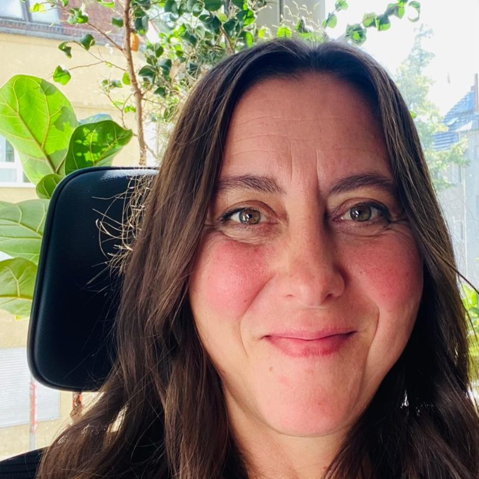

Löwenberger Land · Brandenburg
Zurück ins Hier
und Jetzt.
Bildung, Gesundheit und Natur – in Begegnung mit Pferden, mit Gemeinschaft und mit dem Boden, auf dem wir stehen.
01 · GRASLAND
Reiten beginnt nicht erst im Sattel.
Es beginnt in dem Moment, in dem wir unserem Pferd begegnen. GRASLAND ist ein Raum für pferdegestützte Begleitung, Retreats und Entwicklungsprozesse – für junge Menschen und für alle, deren Alltag viel verlangt.
Im Mittelpunkt stehen Vertrauen, Körperbewusstsein, feine Kommunikation und die Begegnung zwischen Mensch und Pferd.
02 · Kreislauf
Vom Mist zur Erde.
Von der Erde zur Zukunft.
Aus Pferdemist wird durch Wurmkompostierung lebendiger Boden – der Anfang einer regionalen Kreislaufwirtschaft. Und ein Bild für alles, was hier wächst: Das Wichtigste trägt oft, ohne gesehen zu werden.
Die Zukunft hat keine Einzelzimmer.
03 · Genossenschaft Herzenshof
Mehrgeneration ist ihr Reallabor.
Seit über sieben Jahren wächst der Herzenshof: eine Mehrgenerationen-Genossenschaft, enkeltauglich gedacht – von der ersten Idee über die Hofsuche bis zur gelebten Gemeinschaft.
Die Fragen dahinter: Wie bleibt gemeinschaftliches Leben langfristig tragfähig? Wie bleiben kleine Genossenschaften sozial und wirtschaftlich resilient – und was lässt sich auf andere ländliche Orte übertragen?
04 · Stimme
Kooperation braucht Demokratie.
Als Korrespondentin für The Labour Pulse schreibt Maria über die Zukunft von Arbeit, Bildung und Kooperation. Jeden Montag teilt sie ihre MontagsEmpfehlung.
Ihr Weg dorthin: Meisterschülerin der freien Kunst mit Fokus auf Performance und Embodiment, Lehrerin an einer Naturschule, Sonderpädagogin in existenzieller Pädagogik – und heute ProzessHebamme für Menschen in Übergängen.

05 · Gemeinsam weiter
Wer sich stärkt, stärkt andere.
Für die nächste Etappe sucht Maria Forschungs- und Kooperationspartner, Stiftungen und Förderer sowie investierende Mitglieder für den Herzenshof – um Wirkung messbar zu machen und Brücken zwischen Berlin und dem ländlichen Brandenburg zu bauen.